Recall that for a cocartesian fibration \(W \to [1]\), the canonical morphism \(v\colon 0 \to 1\) in \([1]\) determines a covariant transport functor \(v_!\colon W_0 \to W_1\). We will now construct a version of covariant transport that works over an arbitrary base category.
Construction 8.2.1. Let \(S\) be a category, let \(p\colon W \to [1] \times S\) be a cocartesian fibration, and denote by \(p_i\colon W_i \to S\) for \(i = 0,1\) the base change of \(p\) along the inclusion \((i,\id)\colon S \to [1] \times S\). We will construct a cocartesian functor over \([1] \times S\) of the form
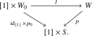 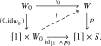 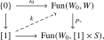
Unwinding the proof of Proposition 4.5.13, we obtain an explicit description of \(l\) at the level of objects: given an object \((\epsilon,w) \in [1] \times W_0\), write \(s := p_0(w) \in S\) and let \(u \colon 0 \to \epsilon\) denote the morphism in \([1]\) obtained from the fact that \(0 \in [1]\) is an initial object, see Lemma 4.4.22. Then we have \[ l(\epsilon,w) = (u,\id_s)_!(w), \] where the functor \((u,\id_s)_!\colon W_{(0,s)} \to W_{(\epsilon,s)}\) denotes cocartesian transport along the morphism \((u,\id_s)\colon (0,s) \to (\epsilon,s)\) in \([1] \times S\).
Lemma 8.2.2. The functor \(l\colon [1] \times W_0 \to W\) constructed in Construction 8.2.1 is a cocartesian functor over \([1] \times S\).
Proof
Consider a morphism \(\psi\colon (\epsilon, s) \to (\epsilon', s')\) in \([1] \times S\) and an object \((\epsilon,w) \in \{\epsilon\} \times (W_0)_s = ([1] \times W_0)_{(\epsilon,s)}\). By Corollary 6.5.9, it will suffice to show that the canonical map \[ \overline{\psi}\colon \psi_!(l(\epsilon, w)) \to l(\psi_!(\epsilon,w)) \] is an isomorphism in \(W\). Observe that we may factor \(\psi\) as a composite \[ (\epsilon,s) \to (\epsilon',s) \to (\epsilon',s'), \] and hence since the covariant transport functors compose, Corollary 4.5.11, it will suffice to show the claim in the two cases where either \(\epsilon = \epsilon'\) or \(s = s'\):
• Assume that \(s = s'\) and \(\psi = (v,\id_s) \colon (\epsilon,s) \to (\epsilon',s)\) for some morphism \(v\colon \epsilon \to \epsilon'\) in \([1]\). Letting \(u_{\epsilon}\colon 0 \to \epsilon\) and \(u_{\epsilon'}\colon 0 \to \epsilon'\) denote the canonical maps in \([1]\), the map \(\overline{\psi}\) then simplifies to the map \[ (v,\id_s)_!(u_{\epsilon}, \id_s)_!(w) \to (u_{\epsilon'},\id_s)_!(w). \] But since \(u_{\epsilon'} \colon 0 \to \epsilon'\) is the composite of \(u_{\epsilon}\colon 0 \to \epsilon\) and \(v\colon \epsilon \to \epsilon'\), this map is an isomorphism by Corollary 4.5.11.
• Assume that \(\epsilon = \epsilon'\) and that \(\psi = (\id_{\epsilon}, v)\) for some morphism \(v\colon s \to s'\) in \(S\). The canonical comparison \((\epsilon,w) \iso (u_{\epsilon}, \id_s)_!(0,w)\), together with the previous case, reduces the claim to \(\epsilon = 0\). The map \(\overline{\psi}\) then simplifies to the map \[ (\id_{0}, v)_!(u_{0},\id_s)_!(0,w) \to (u_{0},\id_{s'})_!(\id_{0}, v)_!(0,w), \] which is an isomorphism by the unit coherence for cocartesian transport, since \(u_{0}\colon 0 \to 0\) is the identity.
This finishes the proof.
Definition 8.2.3 (Straightening). Let \(p\colon W \to [1] \times S\) be a cocartesian fibration, and denote by \(p_i\colon W_i \to S\) for \(i = 0,1\) the base change of \(p\) along the inclusion \((i,\id)\colon S \to [1] \times S\). We define the straightening of \(p\) over \([1]\) to be the cocartesian functor over \(S\) of the form
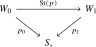
Remark 8.2.4. If \(S' \to S\) is any functor and if \(p\colon W \to [1] \times S\) is a cocartesian fibration, we may form the pullback
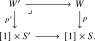 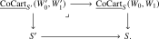 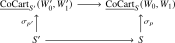
8.2.1 Weak functoriality of straightening over \([1]\)
Given a cocartesian fibration \(W \to [2]\), we obtain functors \(W_0 \to W_1\), \(W_1 \to W_2\) and \(W_0 \to W_2\) by performing covariant transport along the three maps \(0\to 1\), \(1 \to 2\) and \(0 \to 2\) in \([2]\). We have seen in Corollary 4.5.11 that these three functors fit into a commutative triangle
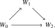
As we shall now see, the analogous statements still hold true over an arbitrary base \(S\).
Lemma 8.2.5. Consider a cocartesian fibration \(p'\colon W' \to S\), and let \(p\colon [1] \times W' \to [1] \times S\) be its pullback along the projection \(\pr_S\colon [1] \times S \to S\):
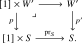
Proof
This is clear from the fact that the dashed diagonal map in the diagram in Construction 8.2.1 may be taken to be the identity map on \([1] \times W'\).
Proposition 8.2.6. Consider a cocartesian fibration \(p\colon W \to [2] \times S\). For \(0 \leq i < j \leq 2\), define the cocartesian fibration \(p_{ij}\colon W_{ij} \to [1]_{ij} \times S\) via the following pullback square:
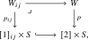
Proof
The proof has two steps. We first extend the three transport constructions from the edges of \([2]\) to cocartesian functors over \([2]\times S\). We then compare the extension associated to \(0\to 2\) with the composite of the extensions associated to \(0\to 1\) and \(1\to 2\).
Via Construction 8.2.1, we obtain cocartesian functors
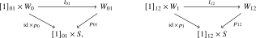 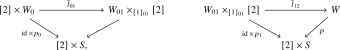 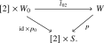 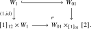
It remains to extend the transport associated to \(0\to 2\). The map \(\overline{l}_{02}\) is
defined by finding a lift in the following commutative diagram:
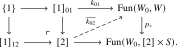 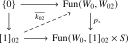
To finish the proof, observe that the composite \(\overline{l}_{12} \circ \overline{l}_{01}\colon [2] \times W_0 \to W\) is another cocartesian functor over \([2] \times S\) that satisfies the same lifting criterion as \(\overline{l}_{02}\). By uniqueness, we thus obtain an identification \[ \overline{l}_{02} = \overline{l}_{12} \circ \overline{l}_{01}. \] Pulling back along the inclusion \(\{2\} \times S \hookrightarrow [2] \times S\) then provides the desired identification \[ \St(p_{02}) = \St(p_{12}) \circ \St(p_{01}). \]
Consequently, straightening over \([1]\) respects identities and composition. This is the coherence needed to interpret the arrows and composable arrows of a universe as functors and composable functors between the categories they classify.